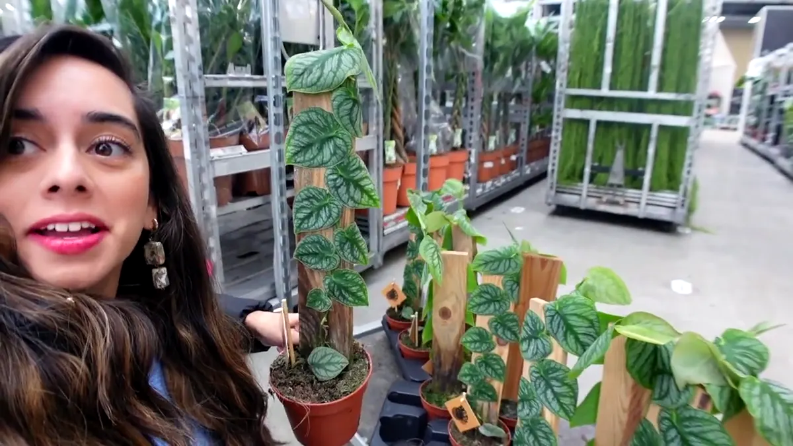

Give a dragon tree medium to bright indirect light, let the upper half of the mix dry before watering, and keep the canes warm. Prune a healthy cane in spring when you want branching.

Care at a glance
| Botanical name | Dracaena reflexa var. angustifolia |
|---|---|
| Light | Medium to bright indirect light |
| Water | Allow substantial upper drying, then water and drain |
| Soil | Well-drained houseplant mix in a stable pot |
| Temperature | Warm and protected from cold draughts |
| Feeding | Light feeding in spring and summer |
Does it fit an Amsterdam home?
The narrow canopy works in compact rooms and corners, provided the plant still has a clear view of the window and enough space from passing coats and bags.
Window direction is only the beginning. Opposite buildings, balconies, trees, privacy film and distance from the glass all change the usable light. Check the intended position at midday before buying, and remember that a spot that works in June may not work in December.
Water the root ball, not the calendar
Allow substantial upper drying, then water and drain Use a nursery pot or another container with drainage holes, water the root ball evenly, and empty the cachepot afterwards. Pot size, root mass, light and room temperature determine the interval; the day of the week does not.
Well-drained houseplant mix in a stable pot Repot when roots and mix indicate a need rather than immediately after purchase. A much larger pot stays wet longer and can turn a simple watering error into root damage.
What changes in Dutch winter?
Reduce watering as winter growth slows. Keep the pot away from a cold entrance and the leaf tips away from radiator airflow.
During long grey stretches, clean dusty leaves, use the brightest suitable position and pause routine feeding when the plant is not growing. Keep foliage clear of both hot radiator air and cold glass. Make one change at a time so you can see what helped.
Read the plant’s signals
| What you see | What to check first |
|---|---|
| Brown tips | Moisture swings, salts or dry heat |
| Yellow soft cane | Serious excess water |
| Leaning sparse crown | Insufficient light |
One imperfect old leaf rarely requires an emergency response. Look for a pattern across new growth, soil moisture and roots, and compare with a dated photo before changing several variables.
How to propagate it
Root top cuttings or healthy cane sections in warmth. The cut parent cane can produce new shoots below the cut.
Use clean tools, label the cutting with its date and keep new propagation in stable bright indirect light while roots establish. Share healthy, pest-free material through a local stekjesbieb or plant swap.
Safety at home
Dracaena is harmful to cats and dogs if eaten. Position fallen leaves and the plant out of reach.